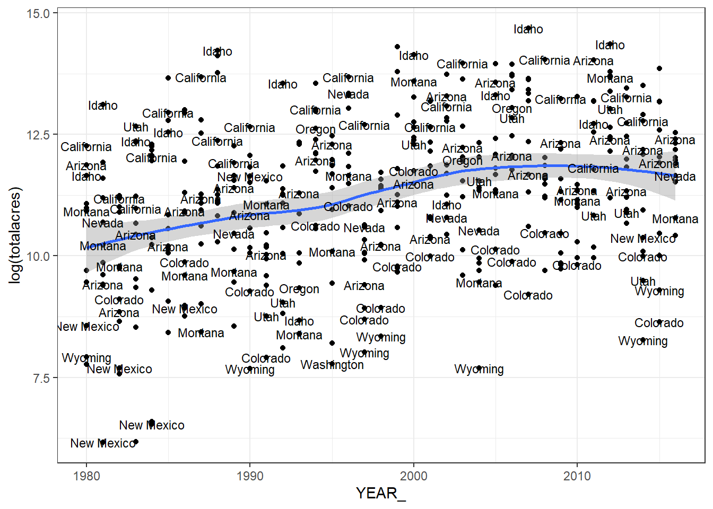
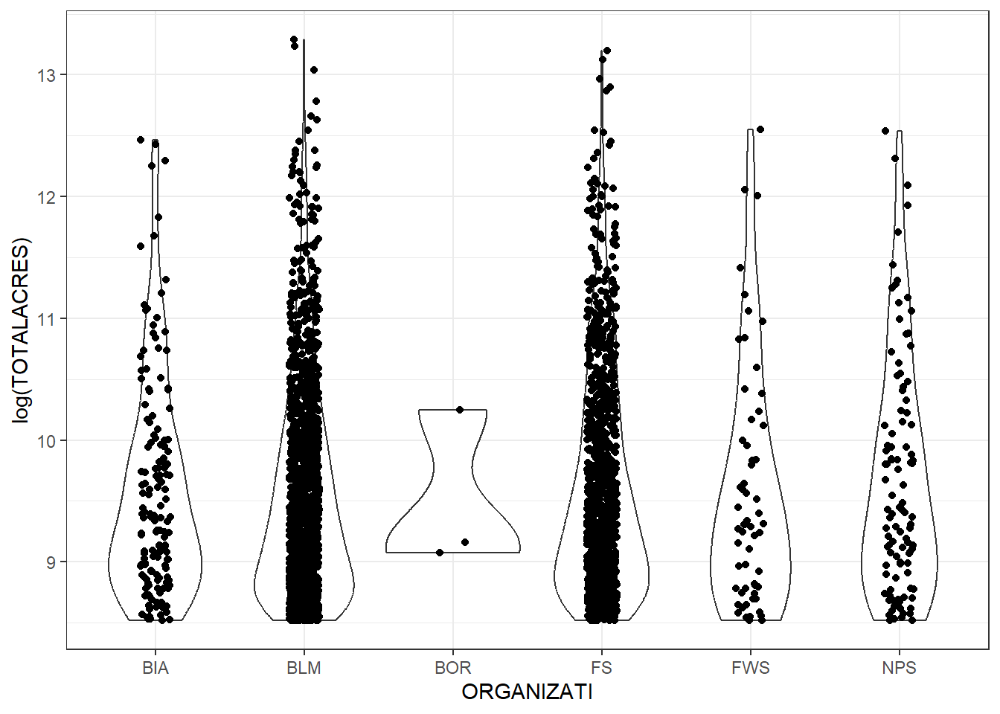
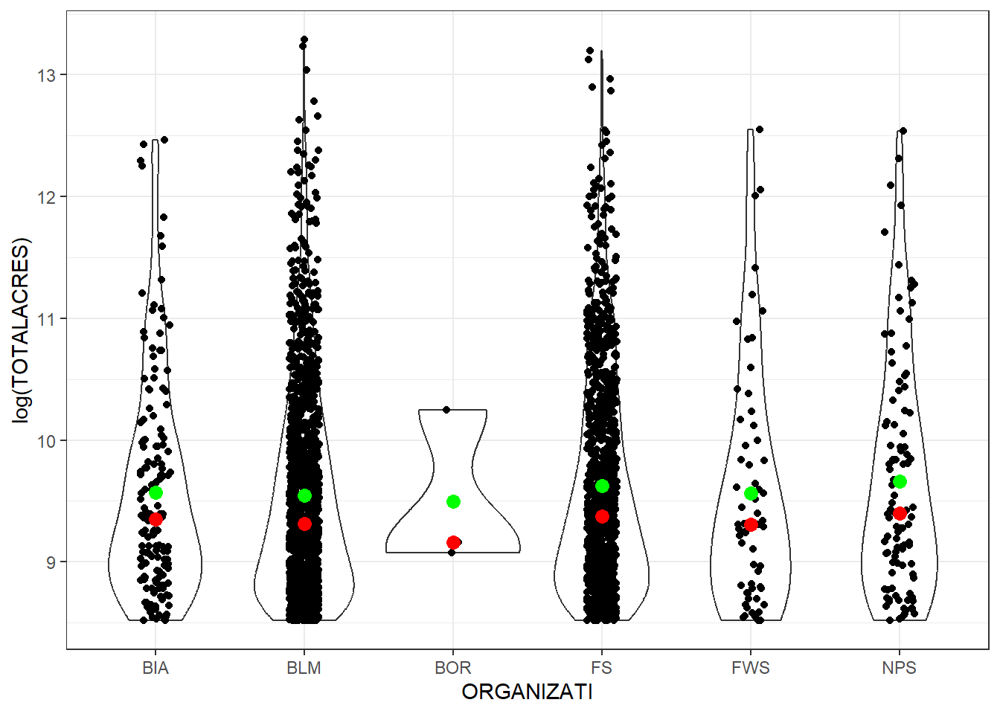

Capítulo 3 Exploración y visualización estática de datos
El Análisis Exploratorio de Datos (EDA) es un flujo de trabajo diseñado para obtener una mejor comprensión de los datos. Se desarrolla en tres pasos:
- El primero consiste en generar preguntas sobre los datos. En este paso se quiere ser lo más amplio posible, ya que en este momento no se tiene una buena idea de los datos.
- A continuación, se buscan las respuestas a estas preguntas mediante la visualización, la transformación y el modelado de los datos.
- Por último, refine sus preguntas o genere nuevas preguntas.
Los datos pueden dividirse en dos grandes grupos:
- Variables con datos categóricas: Conjunto reducido de valores discretos. Ejemplo: sexo, país, color.
- Variables con datos numéricos: Conjunto potencialmente infinito de valores numéricos ordenados. Ejemplo: peso, edad, estatura.
- Las categóricas suelen representarse con gráficos de barras.
- Las numéricas se visualizan con histogramas, boxplots.
-
Tanto categóricas como continuas también pueden representarse mediante gráficos creados en
R.
- Variación: grado en que los valores de una misma variable cambian entre distintas observaciones o mediciones.
- Covariación: describe cómo cambian conjuntamente los valores de dos o más variables, es decir, la medida en que la variación de una se asocia con la variación de otra.
- Medir variación categórica con gráfico de barras.
- Medir variación continua con histograma.
- Medir covariación con diagramas de caja.
- Medir covariación mediante tamaño de símbolos en gráficos de dispersión.
- Creación de gráficos 2D y mapas de calor (hexbin).
- Generación de estadísticas de resumen.
3.1 Visualización de variables categóricas con gráficos de barras
Un gráfico de barras es una buena manera de visualizar datos categóricos. Se separa cada categoría en una barra separada y la altura de cada barra se define por el número de ocurrencias en esa categoría.
Para los ejercicios de esta sección requieren los siguientes paquetes: readr, dplyr, ggplot2. Pueden cargarse desde el panel de paquetes, el panel de la consola o un script. Estos paquetes estan en el paquete de tidyverse.
- Utilice la función
read_csv()para cargar el conjunto de datos de incendios forestales en un marco dataframe.
- Visualicemos las 5 primeras observaciones
## # A tibble: 6 × 14
## FID ORGANIZATI UNIT SUBUNIT SUBUNIT2 FIRENAME CAUSE YEAR_ STARTDATED
## <dbl> <chr> <chr> <chr> <chr> <chr> <chr> <dbl> <chr>
## 1 0 FWS 81682 USCADBR San Diego Bay … PUMP HO… Human 2001 1/1/01 0:…
## 2 1 FWS 81682 USCADBR San Diego Bay … I5 Human 2002 5/3/02 0:…
## 3 2 FWS 81682 USCADBR San Diego Bay … SOUTHBAY Human 2002 6/1/02 0:…
## 4 3 FWS 81682 USCADBR San Diego Bay … MARINA Human 2001 7/12/01 0…
## 5 4 FWS 81682 USCADBR San Diego Bay … HILL Human 1994 9/13/94 0…
## 6 5 FWS 81682 USCADBR San Diego Bay … IRRIGAT… Human 1994 4/22/94 0…
## # ℹ 5 more variables: CONTRDATED <chr>, OUTDATED <chr>, STATE <chr>,
## # STATE_FIPS <dbl>, TOTALACRES <dbl>- Ahora, la estructura de los datos
## spc_tbl_ [439,362 × 14] (S3: spec_tbl_df/tbl_df/tbl/data.frame)
## $ FID : num [1:439362] 0 1 2 3 4 5 6 18 20 21 ...
## $ ORGANIZATI: chr [1:439362] "FWS" "FWS" "FWS" "FWS" ...
## $ UNIT : chr [1:439362] "81682" "81682" "81682" "81682" ...
## $ SUBUNIT : chr [1:439362] "USCADBR" "USCADBR" "USCADBR" "USCADBR" ...
## $ SUBUNIT2 : chr [1:439362] "San Diego Bay National Wildlife Refuge" "San Diego Bay National Wildlife Refuge" "San Diego Bay National Wildlife Refuge" "San Diego Bay National Wildlife Refuge" ...
## $ FIRENAME : chr [1:439362] "PUMP HOUSE" "I5" "SOUTHBAY" "MARINA" ...
## $ CAUSE : chr [1:439362] "Human" "Human" "Human" "Human" ...
## $ YEAR_ : num [1:439362] 2001 2002 2002 2001 1994 ...
## $ STARTDATED: chr [1:439362] "1/1/01 0:00" "5/3/02 0:00" "6/1/02 0:00" "7/12/01 0:00" ...
## $ CONTRDATED: chr [1:439362] "1/1/01 0:00" "5/3/02 0:00" "6/1/02 0:00" "7/12/01 0:00" ...
## $ OUTDATED : chr [1:439362] NA NA NA NA ...
## $ STATE : chr [1:439362] "California" "California" "California" "California" ...
## $ STATE_FIPS: num [1:439362] 6 6 6 6 6 6 6 6 6 6 ...
## $ TOTALACRES: num [1:439362] 0.1 3 0.5 0.1 1 0.1 3 0.1 0.1 0.1 ...
## - attr(*, "spec")=
## .. cols(
## .. FID = col_double(),
## .. ORGANIZATI = col_character(),
## .. UNIT = col_character(),
## .. SUBUNIT = col_character(),
## .. SUBUNIT2 = col_character(),
## .. FIRENAME = col_character(),
## .. CAUSE = col_character(),
## .. YEAR_ = col_double(),
## .. STARTDATED = col_character(),
## .. CONTRDATED = col_character(),
## .. OUTDATED = col_character(),
## .. STATE = col_character(),
## .. STATE_FIPS = col_double(),
## .. TOTALACRES = col_double()
## .. )
## - attr(*, "problems")=<externalptr>- Para este análisis, filtraremos los datos de modo que solo estén representados los incendios que quemaron más de 1000 acres (4046.86 metros cuadrados o 0.4047 hectáreas) en los años 2010 a 2016.
Code
- Añada el código que que se ve a continuación para filtrar los datos y enviar los resultados a un gráfico de barras.
Code
- Si queremos incorporar temáticas para una mejor visualización, tenemos 8 temas que estan incluidos en ggplot2, los cuales son
theme_bw,theme_classic,theme_dark,theme_gray,theme_light,theme_linedraw,theme_minimal,theme_void. Añade el código que ves a continuación para cambiar la faceta atheme_bw.
- Otra forma de realizar el gráfico de barras es la siguiente
Code
df %>%
filter(TOTALACRES >= 1000,
YEAR_ %in% c(2010, 2011, 2012, 2013, 2014, 2015, 2016)) %>%
count(YEAR_) %>%
mutate(Porcentaje = (n / sum(n))*100) %>%
ggplot(mapping = aes(x = factor(YEAR_),y=n))+
geom_col(fill = "steelblue") +
geom_text(aes(label = paste0(n, " (", round(Porcentaje,1), "%)")),
vjust = -0.5, size = 4) +
labs(x = 'Años',
y = 'Número de incendios (%)')+
theme_bw()3.2 Visualización de variable continua con un histograma
La distribución de una variable continua se puede medir con el uso de un histograma. En este ejercicio crearás un histograma de los acres quemados en incendios forestales.
Siguiendo los datos de incendios forestales del 2010 al 2016:
- Introduzca el marco de datos y utilice la función
select()para limitar las columnas y filtrar las filas para que sólo se incluyan los incendios superiores a 1.000 acres. Dado que tenemos un gran número de incendios forestales que quemaron sólo un pequeño número de acres, nos centraremos en los incendios que son un poco más grandes en este caso.
## # A tibble: 1,377 × 5
## ORGANIZATI STATE YEAR_ TOTALACRES CAUSE
## <chr> <chr> <dbl> <dbl> <chr>
## 1 FWS Washington 2010 2755 Natural
## 2 FWS Idaho 2010 1801 Undetermined
## 3 FWS Montana 2010 27898 Natural
## 4 FWS Montana 2012 9468 Natural
## 5 FWS Washington 2012 1141 Human
## 6 FWS Oregon 2010 3083 Human
## 7 FWS Oregon 2013 51015 Undetermined
## 8 FWS Washington 2016 171915 Human
## 9 FWS Arizona 2015 6000 Natural
## 10 FWS Arizona 2016 1624 Natural
## # ℹ 1,367 more rows- Cree el histograma utilizando
ggplot()congeom_hist()y un tamaño de la celda de 500. Los datos están claramente sesgados hacia el extremo inferior del número de acres quemados.
Code
Reconstruya el histograma utilizando un tamaño de celda de 5000. ¿Cuál es el efecto en la salida?
3.3 Visualización de la covariación con gráficos de caja
Los gráficos de caja proporcionan una representación visual de la dispersión de los datos de una variable. Estos gráficos muestran el rango de valores de una variable junto con la mediana y los cuartiles. Siga las instrucciones proporcionadas a continuación para crear un gráfico de caja que mide la covariación entre la organización y la superficie total quemada.
Seguimos con los datos de incendios forestales:
3.4 Visualización de la covariación con el gráfico de burbuja
La función geom_count() puede utilizarse con ggplot() para medir la covariación entre variables utilizando diferentes tamaños de símbolos. Siga las instrucciones proporcionadas a continuación para medir la covariación entre la organización y la causa del incendio forestal utilizando el tamaño del símbolo.
Seguimos con los datos de incendios forestales:
- Extraiga el marco de datos y filtre las filas para que sólo se incluyan los incendios de entre 5000 y 10000 acres. A continuación, agrupe los datos por organización. La columna ORGANIZATI del conjunto de datos contiene datos categóricos de los organismos del gobierno federal de EE.UU. que han tenido tierras afectadas por incendios forestales. Por último utilice
ggplot()congeom_boxplot()para crear unboxplotque muestre la distribución de incendios forestales por organización
Code
df %>%
filter(TOTALACRES >= 5000 & TOTALACRES <= 10000) %>%
group_by(ORGANIZATI) %>%
ggplot(aes(x = ORGANIZATI, y = TOTALACRES)) +
geom_boxplot(fill = "steelblue", alpha = 0.7, color = "black") +
stat_summary(fun = mean, geom = "point", shape = 20, size = 4, color = "red") +
labs(
x = "Organización",
y = "Total acres",
title = "Distribución de acres totales por organización"
) +
theme_bw()
Puede crear también un nuevo boxplot que mapee la covariación de CAUSE y TOTALACRES
- Extraiga el marco de datos y filtre las filas para que sólo se incluyan los incendios forestales que se originaron por causas naturales o humanas. Esto eliminará cualquier registro que son desconocidos o tienen valores perdidos. A continuación, utilice
geom_count()para crear un gráfico de símbolos graduados basado en el número de incendios por organización.
Code
df %>%
filter(CAUSE %in% c("Natural", "Human")) %>%
ggplot(aes(x = ORGANIZATI, y = CAUSE)) +
geom_count(aes(color = CAUSE), show.legend = TRUE) +
scale_color_manual(values = c("Natural" = "#1b9e77", "Human" = "#d95f02")) +
labs(x = "Organización",
y = "Causa",
color = "Causa",
size = "Frecuencia",
title = "Incendios por organización y causa") +
theme_bw()- También puede obtener un recuento exacto del número de incendios por organización y causa
## # A tibble: 11 × 3
## ORGANIZATI CAUSE n
## <chr> <chr> <int>
## 1 BIA Human 49
## 2 BIA Natural 91
## 3 BLM Human 187
## 4 BLM Natural 386
## 5 FS Human 158
## 6 FS Natural 431
## 7 FWS Human 10
## 8 FWS Natural 7
## 9 FWS Undetermined 6
## 10 NPS Human 6
## 11 NPS Natural 463.5 Visualización 2D de contenedores y hexágonos
También puede utilizar gráficos 2D de contenedores y hexadecimales como una forma alternativa de ver la distribución de dos variables. Siga las instrucciones que se proporcionan a continuación para crear gráficos 2D de cubos y hexágonos que visualicen la relación entre el año y la superficie total quemada
- Utilice la función
read_csv()para cargar el conjunto de datos en un marco de datos
- Cree un mapa 2D con
YEAR_en el eje \(x\) yTOTALACRESen el eje \(y\)
Code
El gráfico muestra la distribución conjunta de los años (YEAR_) y el número total de acres (TOTALACRES) mediante un mapa de calor con binning en dos dimensiones. Se observa que la mayor concentración de registros se encuentra en valores bajos de acres (menores a 100.000), lo que indica que la mayoría de las observaciones corresponden a superficies relativamente pequeñas. A su vez, existen pocos casos con valores muy altos (entre 300.000 y más de 600.000 acres), los cuales aparecen como rectángulos aislados y de baja frecuencia, reflejando la presencia de outliers. Finalmente, la acumulación de registros en casi todos los años sugiere un patrón consistente en el tiempo, con algunos picos más notorios después del año 2000.
3.6 Visualización de estadísticas ( resumen de los datos)
Otra técnica básica para realizar un análisis exploratorio de datos es generar varias estadísticas de resumen sobre un conjunto de datos. R incluye una serie de funciones individuales para generar estadísticas de resumen específicas o puede utilizar la función summarise() para generar un conjunto de estadísticas de resumen
- Carguemos nuevamente la data de incendios forestales
- Restringir la lista de columnas y filtra la lista para incluir sólo los incendios forestales de más de 1000 acres
Code
- Hagamos un resumen estadístico de la columna TOTALACRES
Code
El análisis se realizó sobre 7288 registros, con un valor promedio cercano a 10813 y una gran variabilidad, dado que la desviación estándar es de aproximadamente 28579. El 50% de los datos se encuentra en torno a 3240, lo que indica que la mitad de las observaciones están por debajo de ese valor. El 25% más bajo de los registros toma valores hasta 1670, mientras que el 25% más alto supera los 8283. El rango intermedio entre el 25% inferior y el 75% superior es de aproximadamente 6613, reflejando una fuerte dispersión en los datos. Finalmente, los valores observados van desde un mínimo de 1000 hasta un máximo de 590620, lo que muestra la presencia de valores extremos mucho más altos que la mayoría de las observaciones.
3.7 Visualización de un gráfico de correlación
Es una representación gráfica de una matriz de correlaciones entre varias variables numéricas.
Se muestran en forma de mapa de calor (heatmap), círculos, o elipses que varían en tamaño y color según la intensidad y signo de la correlación.
Su objetivo es facilitar la identificación de relaciones lineales fuertes, tanto positivas como negativas, entre todas las variables del conjunto de datos.
Carguemos los datos de la banca
Code
## # A tibble: 5 × 17
## age job marital education default balance housing loan contact day
## <dbl> <chr> <chr> <chr> <chr> <dbl> <chr> <chr> <chr> <dbl>
## 1 30 unemployed married primary no 1787 no no cellul… 19
## 2 33 services married secondary no 4789 yes yes cellul… 11
## 3 35 management single tertiary no 1350 yes no cellul… 16
## 4 30 management married tertiary no 1476 yes yes unknown 3
## 5 59 blue-coll… married secondary no 0 yes no unknown 5
## # ℹ 7 more variables: month <chr>, duration <dbl>, campaign <dbl>, pdays <dbl>,
## # previous <dbl>, poutcome <chr>, y <chr>- Selecciona las variables numéricas
- Hagamos la matriz de correlación y el gráfico
heatmapcon las variables numéricas
Code
## age balance duration
## age 1.000000000 0.08382014 -0.002366889
## balance 0.083820142 1.00000000 -0.015949918
## duration -0.002366889 -0.01594992 1.000000000Vemos que no hay correlación entre ellos.
3.8 Visualización de un gráfico de dispersión
Un diagrama de dispersión es un gráfico en el que los valores de dos variables se trazan a lo largo de dos ejes, y el patrón de los puntos resultantes revela cualquier correlación presente
- Cargar el contenido del archivo
StudyArea.csven un marco de datos
- Utilice
ggplot()para crear un gráfico de dispersión con el año en el eje \(x\) y el total de acres quemados en el eje \(y\).
Code
df %>%
select(ORGANIZATI, YEAR_, TOTALACRES) %>%
group_by(YEAR_) %>%
summarise(totalacres = sum(TOTALACRES, na.rm = TRUE)) %>%
ggplot(aes(x = YEAR_, y = totalacres)) +
geom_point(color = "darkred", size = 3) +
labs(title = "Evolución de Total Acres por Año",
x = "Año",
y = "Total Acres") +
theme_bw()- Hay ocasiones en las que tiene sentido utilizar las escalas logarítmicas en los cuadros y gráficos. Una de las razones es responder a la asimetría hacia los valores grandes, es decir, los casos en los que uno o unos pocos puntos son mucho más grandes que el grueso de los datos. En el gráfico que acabamos de crear hay un par de puntos que entran en esta categoría en en el eje Y. Vuelva a crear el gráfico, pero esta vez utilice la función
log()en la columna totalacres
Code
df %>%
select(ORGANIZATI, YEAR_, TOTALACRES) %>%
group_by(YEAR_) %>%
summarise(totalacres = sum(TOTALACRES, na.rm = TRUE)) %>%
ggplot(aes(x = YEAR_, y = log(totalacres))) +
geom_point(color = "darkred", size = 3) +
labs(title = "Evolución de Total Acres por Año",
x = "Año",
y = "Total Acres") +
theme_bw()3.9 Visualización del gráfico de dispersión con linea de tendencia
Los gráficos construidos con ggplot() pueden tener más de una geometría. Es habitual añadir una línea de predicción (regresión) al gráfico.
Hay varias maneras de añadir una línea de regresión al gráfico de dispersión, una de ellas es utilizar la función geom_smooth()
- Regresion con
method = lm
Code
df %>%
select(ORGANIZATI, YEAR_, TOTALACRES) %>%
group_by(YEAR_) %>%
summarise(totalacres = sum(TOTALACRES, na.rm = TRUE)) %>%
ggplot(aes(x = YEAR_, y = log(totalacres))) +
geom_point(color = "darkred", size = 3) +
geom_smooth(method=lm, se=FALSE)+
labs(title = "Evolución de Total Acres por Año",
x = "Año",
y = "Total Acres") +
theme_bw()- Regresion con
method = loess
Code
df %>%
select(ORGANIZATI, YEAR_, TOTALACRES) %>%
group_by(YEAR_) %>%
summarise(totalacres = sum(TOTALACRES, na.rm = TRUE)) %>%
ggplot(aes(x = YEAR_, y = log(totalacres))) +
geom_point(color = "darkred", size = 3) +
geom_smooth(method = "loess", se=FALSE)+
labs(title = "Evolución de Total Acres por Año",
x = "Año",
y = "Total Acres") +
theme_bw()- Regresion con
method = loesscon intervalo de confianza
Code
df %>%
select(ORGANIZATI, YEAR_, TOTALACRES) %>%
group_by(YEAR_) %>%
summarise(totalacres = sum(TOTALACRES, na.rm = TRUE)) %>%
ggplot(aes(x = YEAR_, y = log(totalacres))) +
geom_point(color = "darkred", size = 3) +
geom_smooth(method = "loess", se=TRUE)+
labs(title = "Evolución de Total Acres por Año",
x = "Año",
y = "Total Acres") +
theme_bw()3.10 Visualización de trazado de categorías
En lugar de representar gráficamente todo el conjunto de incendios forestales, es posible que se quiera comprender mejor las tendencias por estado. En este paso creará un nuevo gráfico de dispersión que visualice las tendencias de los incendios forestales a lo largo del tiempo por estado
- Reagrupar el marco de datos de los incendios forestales por estado y año, despues resuma los grupos por el total de hectáreas quemadas y Añade un parámetro de parámetro de color a la función
aes()para que los puntos y la línea de regresión se se mapeen de acuerdo con el estado en el que se produjeron
3.11 Visualizacion etiquetando nombres
Puede añadir etiquetas a su gráfico mediante la función geom_text() o la función geom_ label()
Code
La pantalla está extremadamente desordenada así que vamos a ajustar algunos parámetros para hacer esto más fácil de leer.
- Puede utilizar el parámetro
check_overlappara eliminar cualquier etiqueta superpuesta. Actualice su código como se ve a continuación
Code

- Esto se ve un poco mejor, pero si se cambia el tamaño de la etiqueta a 2 se reducirá aún más reducir el desorden y la superposición, mientras que esperamos que siga siendo legible. Habrás observado que las etiquetas se sitúan directamente sobre los temas. Puede utilizar los parámetros
nudge_xynudge_ypara mover las etiquetas en relación con el punto. Utilicenudge_xcomo se ve a continuación para ver cómo esto mueve las etiquetas horizontalmente
Code
- También puede colorear las etiquetas por categoría añadiendo el parámetro de color a la función
aes()parageom_text()
Code
- También puedes añadir un subtítulo y un pie de foto con el código que ves a continuación
Code

- También puedes añadir un subtítulo y un pie de foto con el código que ves a continuación
Code
df %>%
group_by(STATE, YEAR_) %>%
summarise(totalacres = sum(TOTALACRES)) %>%
ggplot(aes(x = YEAR_, y = log(totalacres))) +
geom_point(color = "steelblue", size = 2, alpha = 0.7) +
geom_smooth(method = "loess", se = TRUE, span = 0.5, color = "darkorange")+
labs(title=paste("La superficie quemada por incendios forestales las ultimas decadas"), subtitle=paste("1980-2016"), caption="Data from USGS")+
theme_bw()- También puede actualizar las etiquetas X e Y del gráfico. Actualice estas etiquetas en su gráfico usando el código que ve abajo
Code
df %>%
group_by(STATE, YEAR_) %>%
summarise(totalacres = sum(TOTALACRES)) %>%
ggplot(aes(x = YEAR_, y = log(totalacres))) +
geom_point(color = "steelblue", size = 2, alpha = 0.7) +
geom_smooth(method = "loess", se = TRUE, span = 0.5, color = "darkorange")+
labs(title=paste("La superficie quemada por incendios forestales las ultimas decadas"), subtitle=paste("1980-2016"), caption="Data from USGS")+
scale_y_continuous(name="Log del total acres quemadas") +
scale_x_continuous(name="Year quemados")+
theme_bw()3.12 Visualización de leyendas
La función theme() puede utilizarse para controlar la ubicación de la leyenda y la función guide() puede utilizarse para proporcionar un control adicional de la leyenda
- La función
theme()junto con el argumentolegend.positionse utiliza para controlar la ubicación de la leyenda en el gráfico. Por defecto, la leyenda que hemos visto hasta ahora se ha colocado en el lado derecho del gráfico con una orientación vertical. Reposicione la leyenda en la parte inferior con el código siguiente.
Code
df %>%
group_by(STATE, YEAR_) %>%
summarise(totalacres = sum(TOTALACRES)) %>%
ggplot(aes(x = YEAR_, y = log(totalacres), color=STATE)) +
geom_point() +
labs(title=paste("La superficie quemada por incendios forestales las ultimas decadas"), subtitle=paste("1980-2016"), caption="Data from USGS")+
scale_y_continuous(name="Log del total acres quemadas") +
scale_x_continuous(name="Year quemados")+
theme_bw()+
theme(legend.position="bottom")También puede eliminar explícitamente una leyenda estableciendo legend.position = "none". Pruebe eso ahora si lo desea
- Otros aspectos de la leyenda, como el número de filas en la leyenda, así como el tamaño del símbolo pueden ser controlados a través de la función guides(). Utilice el código que se ve a continuación para actualizar la leyenda a dos filas y con cada símbolo de tamaño 4
Code
df %>%
group_by(STATE, YEAR_) %>%
summarise(totalacres = sum(TOTALACRES)) %>%
ggplot(aes(x = YEAR_, y = log(totalacres), color=STATE)) +
geom_point() +
labs(title=paste("La superficie quemada por incendios forestales las ultimas decadas"), subtitle=paste("1980-2016"), caption="Data from USGS")+
scale_y_continuous(name="Log del total acres quemadas") +
scale_x_continuous(name="Year quemados")+
theme_bw()+
theme(legend.position="bottom")+
guides(color=guide_legend(nrow=2,override.aes=list(size=4)))3.13 Visualiazción con facetas
Una forma particularmente buena de graficar variables categóricas es dividir el gráfico en facetas, que son subparcelas que muestran cada una un subconjunto de los datos. Las funciones facet_wrap() y facet_grid() pueden utilizarse para crear facetas
- Utilice la función
facet_wrap()que se muestra en el código siguiente para crear un mapa de facetas que muestre el total de acres quemados por estado
Code
df %>%
group_by(STATE, YEAR_) %>%
summarise(totalacres = sum(TOTALACRES)) %>%
ggplot(aes(x = YEAR_, y = log(totalacres))) +
geom_point() +
geom_smooth(method = "loess", se = TRUE, span = 0.5, color = "darkorange")+
labs(title=paste("La superficie quemada por incendios forestales las ultimas decadas"), subtitle=paste("1980-2016"), caption="Data from USGS")+
scale_y_continuous(name="Log del total acres quemadas") +
scale_x_continuous(name="Year quemados")+
theme_bw()+
facet_wrap(~STATE) 3.14 Visualización de tramas de violín
Los gráficos de violín, que son similares a los gráficos de caja, también muestran la densidad de probabilidad en varios valores. Las áreas más gruesas del gráfico de violín indican una mayor probabilidad en ese valor. Normalmente, los gráficos de violín también incluyen un marcador para la mediana junto con el rango intercuartil (IQR). La función geom_violin() se utiliza para crear gráficos violín en ggplot2
- Cargue el archivo
StudyArea.csvy obtenga un subconjunto de columnas
- Obtenga un subconjunto de columnas, filtrar el marco de datos para que sólo se incluyan los incendios forestales de más de 5.000 acres se incluyan. Agrupe los incendios forestales por organización y guardalo en un objeto
Code
- Crear una gráfica básica de violín.
- Puede añadir las observaciones individuales utilizando
geom_jitter(). Si necesita mantener los puntos y dispersarlos horizontalmente, puede utilizargeom_jitter(height = 0)
Code

- La media puede añadirse utilizando
stat_summary()como se ve a continuación
Code

- La función
box_plot()puede utilizarse para añadir lamedianay elIQR
3.15 Visualización de gráficos de densidad
Los gráficos de densidad, creados con
geom_density()calculan una estimación de la densidad, que es una versión suavizada de un histograma y se utiliza con datos continuos.ggplot2también puede calcular versiones 2D de la densidad, incluyendo contornos y gráficos de densidad con estilo de polígonoTomemos los incendios forestales de más de 1.000 acres
Code
- Cree un gráfico de densidad con la función
geom_density()
- También puede crear el mismo gráfico de densidad con una versión registrada de los datos
- A continuación, crearás gráficos 2D de los datos empezando por los contornos. Añade el código que ves a continuación
- Por último, cree una superficie de densidad 2D utilizando
stat_density_2d()
Code
Considere los datos asociados a precios de casas house_prices.csv que aparece en el directorio RDataSets.zip en Github. Nótese que el archivo posee su respectiva descripción house_prices_description.txt que puede ser de gran utilidad. Realice un análisis exploratorio de los datos relacionados con los precios de casas, teniendo en cuenta cada ítem estudiado en esta sección. Debería agregar todas las visualizaciones extras, que sean necesarias y le permitan generar y refinar preguntas sobre los datos.
Considere los datos asociados a precios de casas house_prices.csv que aparece en el directorio RDataSets.zip en Github. A manera de aplicación, utilice las técnicas básicas de visualización de datos estudiadas en cada ítem de esta sección, ahora aplicadas al conjunto de datos relacionado con la predicción del precio de casas, el cual puede ser influenciado por los distintos factores, presentados en las columnas del archivo house_prices.csv, cuyas descripciones puede encontrar en el archivo house_prices_description.txt. Puede agregar visualizaciones extras, que le permitan generar y refinar preguntas sobre los datos.